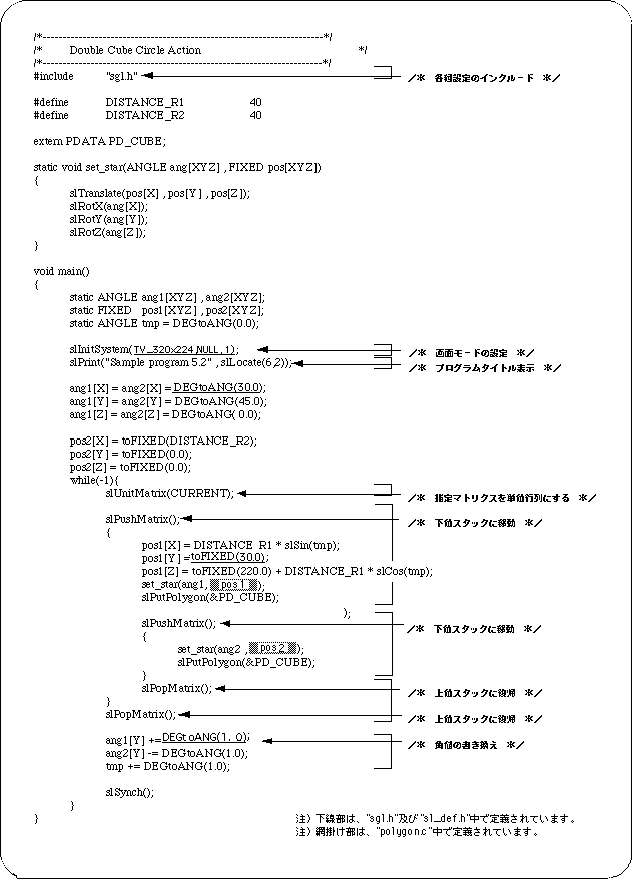
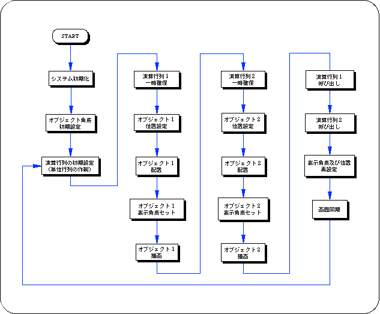

Return to previous page | Return to menu | Go to next page
Definition of hierarchical structure by Sega Saturn
Next, referring to the sample program, the method for realizing the hierarchical structure in Sega Saturn will be explained.
List 5-1 sample_5_2: Hierarchical matrix definition

Flow 5-1 sample_5_2: Hierarchy matrix definition flowchart

Return to previous page | Return to menu | Go to next page